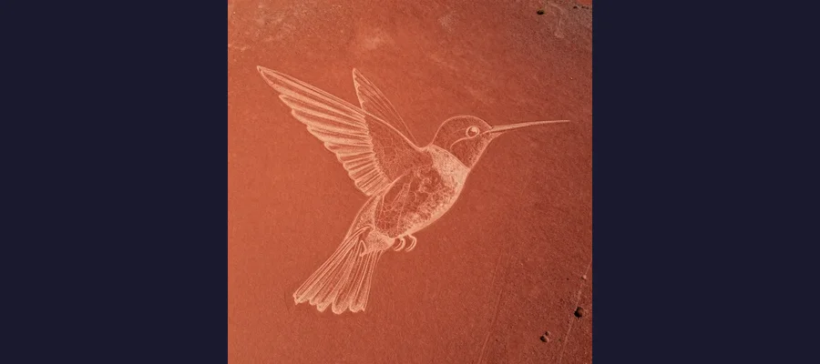
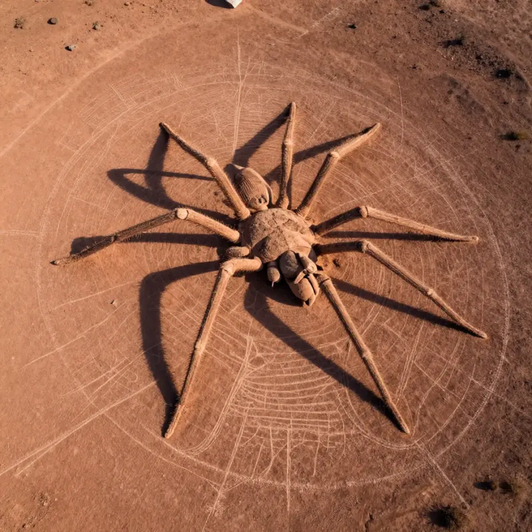

The Nazca Lines: Giant Drawings in the Desert!

Giant figures etched into the desert - some are bigger than a football field!
Imagine drawing pictures so big that you can only see them from an airplane. Now imagine doing this 2,000 years ago - when airplanes didn't exist!
That's exactly what ancient people did in Peru. They created the Nazca Lines - massive drawings in the desert that cover over 400 square kilometers (150 square miles). But here's the mystery: why did they make art they couldn't even see?
Overview
What Are the Nazca Lines?
The Nazca Lines are giant "geoglyphs" - drawings made on the ground - in the desert of southern Peru. They were created by removing the dark top layer of stones to reveal the lighter soil underneath.
There are hundreds of individual figures, including:
- 🐦 Animals: hummingbird, spider, monkey, whale, dog, lizard, and more
- 🌱 Plants: trees, flowers, and strange spiral shapes
- 👤 Human-like figures: including one called "the astronaut"
- 📐 Geometric shapes: triangles, circles, and hundreds of straight lines

The hummingbird is 97 meters (318 feet) long - that's longer than a football field!
📏 Mind-Boggling Scale
Some of the straight lines stretch for several kilometers. The largest figures span over 200 meters (650 feet). Yet the lines are incredibly straight, and the drawings are perfectly proportioned!
How Were They Made?
The Nazca people created these lines between 500 BCE and 500 CE. They didn't have modern tools or even wheels. So how did they do it?
The method was actually quite simple:
1. They removed the dark reddish stones from the desert surface
2. This revealed the lighter colored soil underneath
3. The contrast created visible lines
The desert's extremely dry climate has preserved these lines for over 2,000 years. There's almost no rain or wind to erode them!

The spider figure is 46 meters (150 feet) long. Some think it represents a fertility ritual!
Evidence
Discovering the Lines
Local people always knew about the lines, but scientists only became interested in the 1920s when airplanes began flying over the desert. Pilots were amazed to see giant animals and shapes below them!
In 1994, the Nazca Lines became a UNESCO World Heritage Site. Today, tourists can take small plane flights to see the incredible figures from the air.
Competing Explanations
The Big Mystery: Why?
Here's what puzzles scientists: the Nazca people couldn't fly. They had no way to see their creations from above. So why spend centuries making giant art that you can't fully appreciate?
Several theories have been proposed:
🙏 Religious Purpose: The lines might have been walkways for religious ceremonies. The figures could have been offerings to the gods who WOULD see them from the sky.
⭐ Astronomical Calendar: Some lines point to where the sun and stars rise and set at certain times of year. Maybe the lines were a giant astronomical calendar!
💧 Water Rituals: The Nazca lived in a very dry place. Some think the lines were part of ceremonies to ask the gods for rain.
👽 Aliens? Some people (famously, Erich von Daniken) claimed aliens made the lines as landing strips. But most scientists disagree - the Nazca were definitely capable of making them!
🔍 How Did They See Them?
Researchers think the Nazca used small-scale models and scaffolding to plan the designs. Some figures can be partially seen from nearby hills!
Open Questions
The Mystery Continues
Despite decades of study, the Nazca Lines keep their secrets. New figures are still being discovered - including one found as recently as 2020 using drones!
Were they messages to the gods? An ancient calendar? Something else entirely? The Nazca Lines remind us that ancient people were far more creative and sophisticated than we often imagine!
References & Further Reading
Editorial note: We cross-check claims across multiple independent sources. See our Editorial Policy.